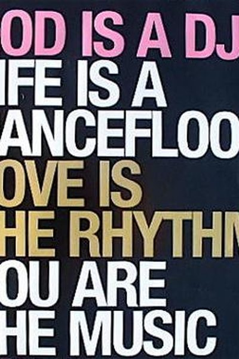

Library › Money & Finance
One Up on Wall Street — Summary & Key Lessons

How to use what you already know to make money in the market — the legendary Fidelity manager's most beloved book.
📖 OPEN THE FULL INTERACTIVE BREAKDOWN →🌐 Read it in Hindi, Hinglish, Gujarati, Tamil & 22 more languages — free, with audio.
💡 The Big Idea
Peter Lynch ran Fidelity's Magellan Fund to a 29% annual return — the best record of his era — and his secret was ordinary: invest in what you understand. Your edge as an individual is that you encounter products, stores and services before analysts do. His system: classify companies (slow growers, fast growers, stalwarts, cyclicals, turnarounds, asset plays), buy when the story is good AND the price is fair, and check the 'ten-bagger' checklist before you buy.
🧠 The 6 Key Lessons
Lesson 1: Buy What You Know
The Individual Investor
Lynch's famous edge: you meet potential winners before Wall Street does — at the mall, the clinic, the office. If a product you love is selling everywhere and the company is still unknown to analysts, that's your head start. Expertise beats insider tips.
📖 Example: Lynch's wife bought Hanes pantyhose because she loved them; the stock multiplied 6x. The Dunkin' Donuts and Home Depot wins came from everyday observation — ordinary knowledge, extraordinary returns. Read the full example →
⚡ Do this: Look at what you use and love daily: which brand is winning your wallet? Add it to a watchlist and start researching it — that's your edge.
Lesson 2: Classify the Company Before You Buy
Classifying Companies
Lynch sorts every stock into one of six classes, each with its own rules: slow growers (safe but boring), stalwarts (steady, dividend-paying), fast growers (the 20-25% compounders), cyclicals (boom-bust), turnarounds (damaged goods recovering), and asset plays (worth more than the market thinks). Buy the right class at the right price.
📖 Example: Ford and the auto stocks are cyclicals — buy near the bottom of the cycle, not when everyone loves them. A drug company growing 22% a year is a fast grower — hold while the growth holds. Read the full example →
⚡ Do this: Classify any stock you own or are watching into Lynch's six boxes. Different class = different buy/sell rules. Write the rules down.
Lesson 3: The Two-Minute Drill and the Earnings Line
The Fundamentals
Before buying, can you explain in two minutes why you own it — in a story a child could understand? And check the earnings line: a stock is only as good as its earnings growth over 10 years. The P/E ratio vs growth rate (PEG) tells you if the price is fair.
📖 Example: Lynch's rule of thumb: a company growing at 20% with a P/E of 20 is fairly priced; growing 20% with a P/E of 40 is overpriced. The story ('Dunkin' sells coffee and doughnuts — everyone buys them') beats jargon. Read the full example →
⚡ Do this: Write your two-minute story for any stock you own. If you can't, you don't own it yet — you own a gamble.
Lesson 4: Avoid the Traps: Hot Stocks, Hot Air, and Your Ego
Avoiding the Traps
Lynch's list of classic traps: buying the hot stock everyone's talking about (the attention means it's already priced), falling for 'the next something' (the next Xerox is always overpriced), ignoring ugly balance sheets, and confusing a good company with a good stock — great companies can be terrible buys at the wrong price.
📖 Example: Lynch warns: 'If you're lucky enough to find a company that's a great business, you still have to check whether you're paying too much.' The 1970s 'nifty fifty' — the best companies on earth — took 25 years to recover for buyers at the top. Read the full example →
⚡ Do this: Before buying, ask: 'Am I buying because it's a good company — or a good PRICE?' If you can't answer the price part, wait.
Lesson 5: Know the Story, Then Know When to Sell
Selling
Lynch's selling rule is simple: sell when the STORY changes, not when the price wobbles. The fast grower whose growth rate is slowing, the cyclical at the top of the cycle, the turnaround that finished turning — each has its exit signal. If you knew why you bought, you know when to leave.
📖 Example: When Dunkin' Donuts' growth story ended, the sell signal was the numbers, not the headlines. Lynch's 'housework' rule: review your stocks as regularly as you'd clean your house — a few hours a week is plenty. Read the full example →
⚡ Do this: Write one line for each holding: 'I own X because ___.' If the reason is dead, the position is dead — sell it.
Lesson 6: Buy What You Know — Your Edge Is in Your Daily Life
The Peter Lynch Principle
Lynch's famous advice: the best investment ideas come from your own life — the product you love, the store you can't live without, the service that surprises you — because you see real demand before analysts do. The amateur who observes well can beat professionals who only read spreadsheets. Before any purchase, ask: would I want to own this company?
📖 Example: Lynch found winners by noticing a new product that customers raved about or a brand gaining shelf space — the kind of observation available to any shopper. The professional's model said 'overvalued'; the shopper's experience said 'this is taking off'. Read the full example →
⚡ Do this: This week, notice one business or product you genuinely love and research it as a potential investment — practice seeing demand yourself.
✅ 5-Step Action Plan
- Make a list of 3 brands you use daily and research one.
- Classify every holding into Lynch's six boxes.
- Write a two-minute story for each stock you own.
- Check the PEG: is the price fair for the growth?
- Define your sell signal BEFORE you buy.
⚠️ When This Doesn't Work
Lynch's 'invest in what you know' is the most beloved stock-picking advice ever — and Mt. Gox is the cautionary tale: its users knew Bitcoin better than anyone on earth — they lived in the technology, understood it deeply, were the ultimate 'invest in what you know' crowd — and still lost $400 million when the exchange that held their coins collapsed. Knowing the product is not knowing the business. Lynch's rule works when the thing you know is the thing that makes money; it fails when what you know is the technology and someone else controls the custody, the platform and the trust.
💀 The Graveyard Proves It
🎴 Mt. Gox — Magic Cards Site → 70% of Bitcoin → 850,000 Coins Gone. Burn: 850,000 BTC (~$45B at later prices). Read the full case study →
💬 Best Quotes from One Up on Wall Street
- “Go for a business that any idiot can run — because sooner or later, any idiot probably is going to run it.”
- “Know what you own, and know why you own it.”
- “The best stock to buy may be the one you already own.”
Interactive version: mark lessons as read, listen in your language, share quote cards.